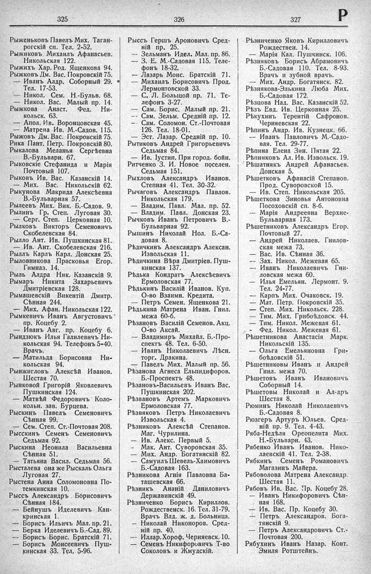

Лист источника 459
Скан

Распознанный текст
325
Рыженьковъ Павелъ Мих. Таган-
рогскій сп. Тел. 2-52.
Рыжиковъ Михаилъ Афанасьев.
Никольская 122.
Рыжихъ Хар. Род. Ященкова 94.
Рыжковъ Дм. Вас. Покровскій 75.
— Иванъ Алдр. Соборный 29.
Тел. 17-53.
— Никол. Сем. Н.-Бульв. 68.
— Никол. Вас. Малый пр. 14.
Рыжкова Анаст. Фед. Ни-
кольск. 63.
— Апол. Ив. Воронцовская 45.
— Матрена Ив. М.-Садов. 115.
Рыжовъ Дм. Вас. Покровскій 75.
Рика Пант. Петр. Покровскій 80.
Рыкалова Меланья Сергѣевна
В.-Бульварн. 67.
Рыковскіе Стефанида и Марія
Почтовый 107.
Рыковъ Ив. Вас. Казанскій 14.
— Мих. Вас. Никольскій 62.
Рыкунова Макрида Алексѣевна
В.-Бульварная 57.
Рылеевъ Мих. Вик. Б.-Садов. 9.
Рылинъ Гр. Степ. Луговая 30.
— Серг. Степ. Церковная 10.
Рылковъ Викторъ Семеновичъ
Скобелевская 84.
Рылло Ант. Ив. Пушкинская 81.
— Ив. Ант. Скобелевская 216.
Рыллъ Карлъ Карл. Донская 25.
Рыловникова Прасковья Егор.
Гимназ. 14.
Рыль Алдра Ник. Казанскій 9.
Рымаръ Никита Захарьевичъ
Дмитріевская 128.
Рымашевскій Викентій Дмитр.
Сѣнная 244.
— Мих. Афан. Никольская 122.
Рымкевичъ Иванъ Августовичъ
пр. Коцебу 2.
— Иванъ Авг. пр. Коцебу 6.
Рындзюкь Илья Галилевичъ Ни-
кольская 94. Телефонъ 5-40.
Врачъ.
— Матильда Борисовна Ни-
кольская 94.
Рынжигловъ Алексѣй Иванов.
Шестая 70.
Рынковой Григорій Яковлевичъ
Пушкинская 124.
— Матвѣй Федоровичъ Коло-
кольн. зав. Бурцева.
Рыскинъ Павелъ Семеновичъ
Сѣнная 99.
— Сем. Степ. Ст.-Почтовая 208.
Рыскинъ Семенъ Семеновичъ
Седьмая 92.
Рыскина Неонила Васильевна
Сѣнная 51.
— Татьяна Васил. Седьмая 56.
Рысталева она же Рыскаль Ольга
Луговая 27.
Рыстена Анна Соломоновна По-
темкинская 10.
Рыссъ Александръ Борисовичъ
Сѣнная 184.
— Бейнушъ Иделевичъ Кан-
кринская 1.
— Борисъ Ильичъ Мал. пр. 21.
— Берка Иделевичъ Б.-Сад. 89.
— Борисъ Борис. Братскій 71.
— Борисъ Моисеевичъ Пуш-
кинская 33. Тел. 5-96.
326
Рыссъ Гершъ Ароновичъ Сред-
ній пр. 25.
— Зельманъ Идел. Мал. пр. 86.
— З. Е. М.-Садовая 115. Теле-
фонъ 18-32.
— Лазарь Моис. Братскій 71.
— Михаилъ Борисовичъ Прод.
Лермонтовской 33.
— С. Л. Большой пр. 71. Те-
лефонъ 3-27.
— Сам. Борис. Малый пр. 21.
-- Сам. Зельм. Средній пр. 12.
— Сам. Соломон. Ст.-Почтовая
126. Тел. 18-01.
— Эст. Лазар. Средній пр. 10.
Рытиковъ Андрей Григорьевичъ
Седьмая 84.
— Ив. Іустин. При город. бойн.
Ритченко З. И. Новое поселен.
Седьмая 151.
Рыхловъ Александръ Иванов.
Степная 41. Тел. 30-32.
Рычаговъ Александръ Павлов.
Никольская 179.
— Владим. Павл. Мал. пр. 52.
— Владим. Павл. Донская 23.
Рычковъ Иванъ Петровичъ В.-
Бульварная 92.
Рышинъ Николай Нол. Б.-Са-
довая 8.
Рѣдичкинъ Александръ Алексан.
Извольская 11.
Рѣдичкина Вѣра Дмитріев. Пуш-
кинская 137.
Рѣдька Кондратъ Алексѣевичъ
Ермоловская 77.
Рѣдькинъ Василій Иванов. Куп.
О-во Взаимн. Кредита.
— Петръ Семен. Ященкова 21.
Рѣдькина Матрена Иван. Гнил.
межа 60-б.
Рѣзановъ Василій Семенов. Акц.
О-во Аксай.
-- Владиміръ Михайл. Б.-Про-
спектъ 48. Тел. 6-50.
— Иванъ Николаевичъ Лѣсн.
торг. Дракина.
— Павелъ Мих. Малый пр. 56.
Рѣзанова Агнеса Ельпидифоров.
Б.-Проспектъ 48.
Рѣзановъ-Васильевъ Иванъ Вас.
Пушкинская 202.
Рѣзвановъ Артемъ Марковичъ
Ермоловская 77.
Рѣзвяковъ Петръ Николаевичъ
Извольская 4.
Рѣзниковъ Алексѣй Степанов.
Маг. Чурилина.
— Ив. Алекс. Первый 5.
— Мак. Ант. Суворовская 35.
— Мих. Андр. Богатянскій 82.
— Самуилъ Шевель-Хаимовичъ
Б.-Садовая 163.
Рѣзникова Агнія Павловна Ба-
ташевская 66.
Рѣзникъ Ананій Даниловичъ
Державинскій 49.
Рѣзниченко Борисъ Кириллов.
Рождественск. 16. Тел. 31-79.
Врачъ Влд. ж. д. Больница.
— Николай Никоноров. Сред-
ній пр. 40.
-- Иллар. Хороф. Черняевск. 10.
— Семенъ Никифоровичъ Т-во
Соколовъ и Жмудскій.
327
Р
Рѣзниченко Яковъ Кирилловичъ
Рождествен. 14.
— Марія Кал. Пушкинск. 106.
Рѣзняковъ Борисъ Абрамовичъ
Б.-Садовая 110. Тел. 8-93.
Врачъ и зубной врачъ.
— Мих. Андр. Богатянск. 82.
Рѣзнякова-Элькина Люба Мих.
Б.-Садовая 172.
Рѣзцова Над. Вас. Казанскій 52.
Рѣзъ Евд. Ив. Церковная 25.
Рѣкухинъ Терентій Сафронов.
Черняевская 22.
Рѣпинъ Андр. Ив. Кузнецк. 66.
— Иванъ Павловичъ М.-Садо-
вая. Тел. 29-77.
Рѣпина Елена Зин. Пятая 22.
Рѣпниковъ Ал. Ив. Извольск. 19.
Рѣшатнякъ Андрей Афанасьев.
Донская 5.
Рѣшетковъ Афанасій Степанов.
Прод. Суворовской 15.
— Ив. Степ. Никольская 205.
Рѣшеткова Зиновья Антоновна
Посоховскій сп. 8-б.
— Марія Андреевна Верхне-
Бульварная 173.
Рѣшетниковъ Александръ Егор.
Почтовый 27.
— Андрей Николаев. Гнилов-
ская межа 73.
— Вас. Ив. Сѣнная 36.
— Зах. Никол. Межевая 65.
— Иванъ Николаевичъ Гни-
ловская межа 60.
— Илья Емельян. Лермонт. 9.
Тел. 24-77.
-- Карпъ Мих. Очаковск. 19.
— Мат. Петр. Покровскій 35.
— Степ. Мих. Никольск. 228.
— Тим. Мих. Грибоѣдовск. 44.
— Тим. Никол. Межевая 61.
— Фед. Никол. Межевая 61.
Рѣшетникова Анастасія Марк.
Никольскій 135.
— Ольга Емельяновна Гри-
боѣдовскій 51.
Рѣшетниковы Иванъ и Андрей
Гнил. межа 70.
Рѣшетовъ Иванъ Ивановичъ
Соборный 14.
Рѣшетовы Николай и Ал-дръ
Шестая 8.
Рюминъ Николай Николаевичъ
Б.-Садовая 8.
Рюзгеръ Артуръ Юльев. Сред-
ній пр. 9. Тел. 4-43.
Ряба-Недѣля Ореопелита Мих.
Н.-Бульварн. 43.
Рябенко Иванъ Иванов. Нико-
лаевскій 41. Тел. 2-38.
Рябкинъ Семенъ Романовичъ
Магазинъ Майера.
Рябоволова Матрена Александр.
Шестая 11.
Рябовъ Ив. Вас. Пр. Коцебу 28.
— Иванъ Никифоровичъ Сѣн-
ная 168.
— Ив. Вас. Пр. Коцебу 30.
— Петръ Александров. Бога-
тянскій 9.
— Петръ Александровичъ Ст.-
Почтовая 200.
Рябухинъ Иванъ Назар. Конт.
Эмиля Ротштейнъ.